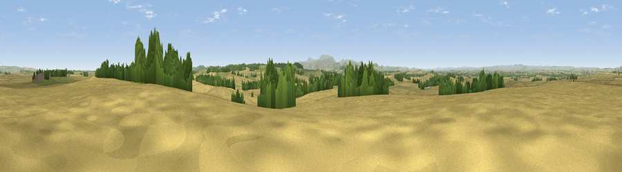

Mattilees Hill
#14487 in England · top 58% of its area beats it · near DuddoThe view, rendered

A 360° render of this exact spot computed from the terrain model, tree cover and land cover — summer colours, afternoon light, calibrated against photographs of famous viewpoints. Real trees, hedges and buildings will differ in detail.
The panorama
Grey silhouette: terrain skyline in each direction (720 bearings, Earth curvature and refraction included). Dashed green: skyline with trees (+15 m) and buildings (+8 m) as obstacles. Blue strip: how far the ground is visible on each bearing.
Where the view opens
Wedge length = distance to the farthest visible ground on that bearing (vegetation-aware). Rings at 10, 25 and 50 km.
What fills the view
69% cropland · 21% grassland · 9% woodland ·
Angular shares of the visible panorama (visual magnitude), not map area. Landscape diversity 0.37 (0–1 Shannon).
Key numbers
More beautiful places nearby
The staircase of upgrades: each row has a higher view potential than everything closer. Driving times are estimates from straight-line distance, calibrated against real road routing — check an actual route before setting out.
| Place | Direction | Drive | Score |
|---|---|---|---|
| Viewpoint near Etal | S · 3 km | ~8 min | 66.5 |
| Viewpoint near Etal | S · 3 km | ~8 min | 72.1 |
| Viewpoint near Ford | SSE · 7 km | ~14 min | 74.9 |
| Viewpoint near Doddington | SSE · 9 km | ~18 min | 80.3 |
| Moneylaws Hill | SW · 11 km | ~21 min | 83.0 |
| Greensheen Hill | ESE · 14 km | ~25 min | 87.5 |
| Viewpoint near Chillingham | SE · 23 km | ~38 min | 88.1 |
| Ullock Pike | SSW · 134 km | ~158 min | 89.4 |
55.68456, -2.09684 · source: dobih hill · position refined by local search. Computed location — check access rights before visiting.